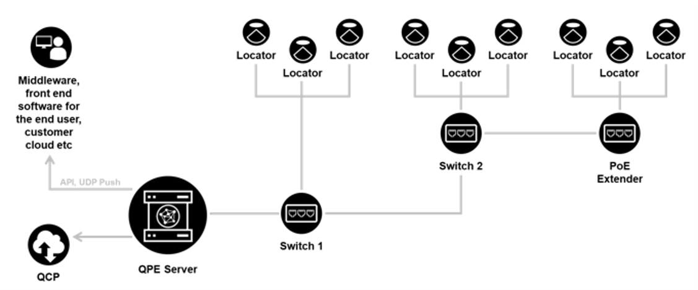
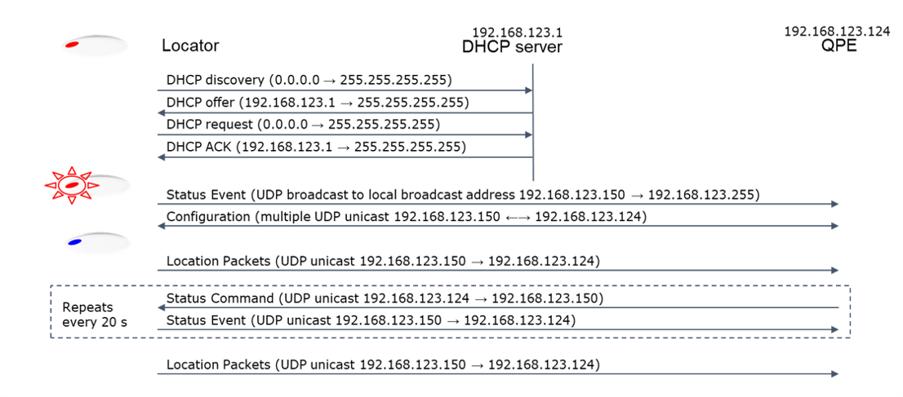
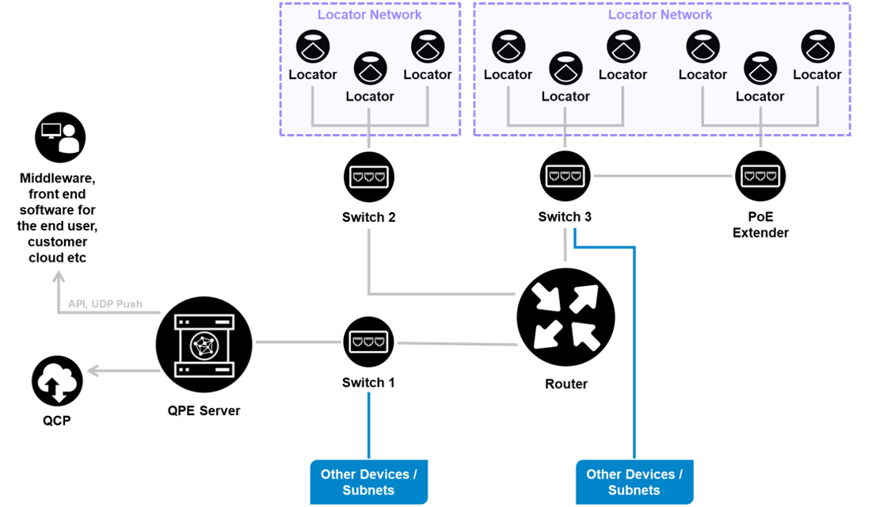
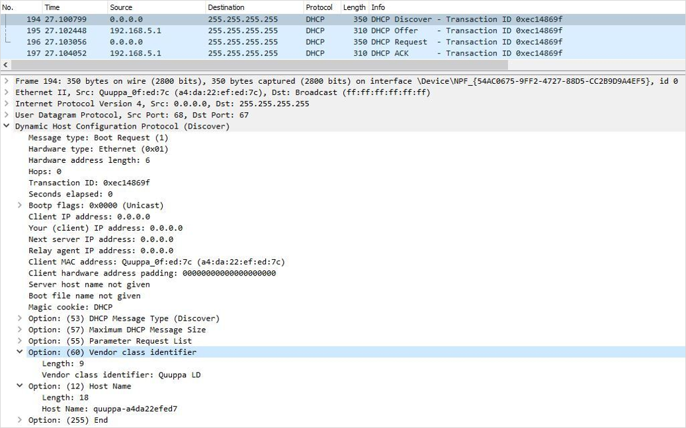
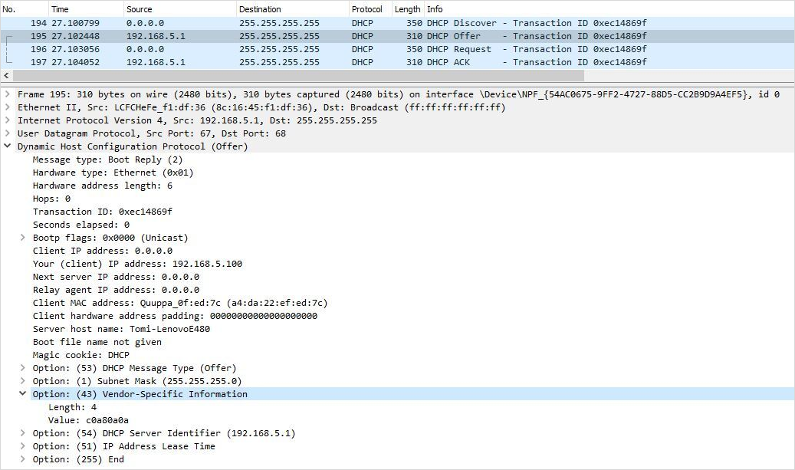
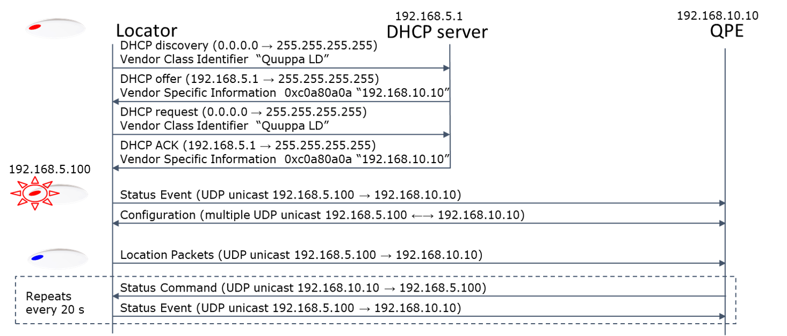
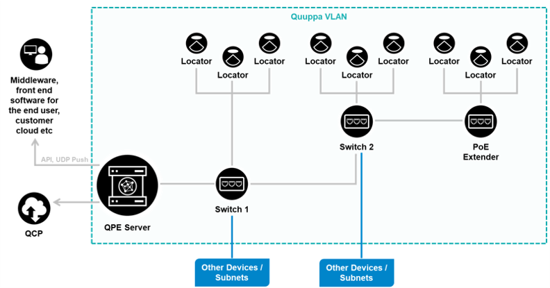

Typical System Architectures
There are several network configuration options for setting up a Quuppa system. The most appropriate set up for your deployment will depend on the specifics of your use case. Below, you can find examples of some common network configurations used for Quuppa system infrastructures.
In some cases, a simple setup with the Locators and the QPE in the same subnet may be sufficient. However, if the QPE is not in the same subnet as the Locators, either the DHCP Options should be used or a VLAN connecting the QPE and the Locators should be configured.
QPE and Locators Connected in a Flat Network
In a flat network, all of the devices run in the same physical network. This setup is used for smaller networks, due to their structural simplicity.

Communication Between Locator and QPEThe diagram below shows an example of the communication between a Locator and the QPE in a simple deployment with one subnet. When the Locators and the QPE are within the same subnet, there is an autodiscovery mechanism for the Locators and the QPE to connect. In this mechanism, the Locator uses a broadcast message to find a QPE, and the QPE responses with multiple unicast messages to the Locator.
Please note that the IP addresses shown are just examples, not mandatory addresses.

QPE and Locators Connected Using DHCP Options with a Shared Infrastructure Over Multiple Subnets
This is a common network infrastructure for large deployments and it uses the extended star network configuration meaning that there is practically no limit to the size of the network. Larger networks running in an extended star configuration will deploy across multiple subnets, and so a it is important to enable the necessary DHCP options to ensure that the Locators are able to connect to the QPE.
A good knowledge of setting up DHCP options in the route is needed for setting up this kind of infrastructure to ensure connectivity between the Locators and the server hosting the QPE, specifically when spanning multiple subnets.

DHCP Options Implementation for QPE Discovery
-
In this setup, the DHCP server provides the IP addresses for the Locators as well as the IP address of the QPE.
When enabled, Locators start by identifying themselves as "Quuppa LD" using a DHCP option 60, Vendor Class Identifier (VCI) within DHCP broadcast messages. Please note that all Quuppa Locator models will identify themselves in the same way.
-
Properly configured DHCP server responds back to the Locator with a DHCP option 43, Vendor Specific Information (VSI), within the response message.
-
In Quuppa’s implementation the VSI contains the IP address of the QPE server. It can be configured as a plain VSI or as encapsulated VSI options.
-
Plain VSI option:
-
4 bytes long VSI containing the QPE IP address in hex.
-
8 bytes long VSI containing the primary and secondary QPE IP addresses in hex in that order.
-
-
Encapsulated VSI options (requires Locator main firmware 1.103.1007 or above):
-
6 bytes long VSI. The first information byte (sub-type) can be user defined and is skipped, second byte (length of encapsulated data) shall be 4, and the last 4 bytes contain the QPE IP address in hex.
-
10 bytes long VSI. The first information byte (sub-type) can be user defined and is skipped, second byte (length of encapsulated data) shall be 8, and the last 8 bytes contain the primary and secondary QPE IP addresses in hex in that order.
-
12 bytes long VSI is interpreted as 2 consecutive 6 bytes long encapsulations (see above), the first one containing the primary QPE IP address and the second containing the secondary QPE IP address.
-
-
If the VSI length is something else, the VSI is skipped.
-
After that, the Locator starts sending the Quuppa Proprietary QPE discovery messages directly to the IP address of the QPE.
Example DHCP configuration on ISC-DHCP server using DHCP options ########################################################## option serverip code 43 = ip-address; class "vendor-class" { match option vendor-class-identifier; } ########################################################## # This is a very basic subnet declaration. subnet 192.168.5.0 netmask 255.255.255.0 { subclass "vendor-class" "Quuppa LD" { option vendor-class-identifier "Quuppa LD"; # option serverip <ip address of the QPE> option serverip 192.168.10.10; } range 192.168.5.100 192.168.5.250; } ##########################################################Note: Each DHCP server software application has its own specific configuration method. As a result, depending on the software that you are using, it may look different from the example shown here. For example, when using Infoblox, the response data type should be String, and the value a list of hexadecimal characters separated by colons, for example c0:a8:7b:7c.DHCP Options Example Data
The following are examples of network data for the DHCP options.


Tip: Try connecting QPE and Locator(s) within the same subnet and use, for example, the Wireshark application software (https://www.wireshark.org/) for monitoring the traffic.
Communication Between Locator and QPE
The diagram below shows an example of the communication between a Locator and the QPE when DHCP options are in use. Please note that the IP addresses shown are just examples, not mandatory addresses.

QPE and Locators Connected via VLAN with a Shared Infrastructure
This is another infrastructure architecture based on the extended start network configuration used for large deployments. The setup is typically used for large deployments because there is practically no limit to the size of the network.
When using this infrastructure architecture, the Quuppa infrastructure is configured to run within its own VLAN. Make sure to include all of the Quuppa devices in the same VLAN, including the server running the QPE.

Communication Between Locator and QPE
The diagram below shows an example of the communication between a Locator and the QPE in a deployment using the VLAN setup. Please note that the IP addresses shown are just examples, not mandatory addresses.